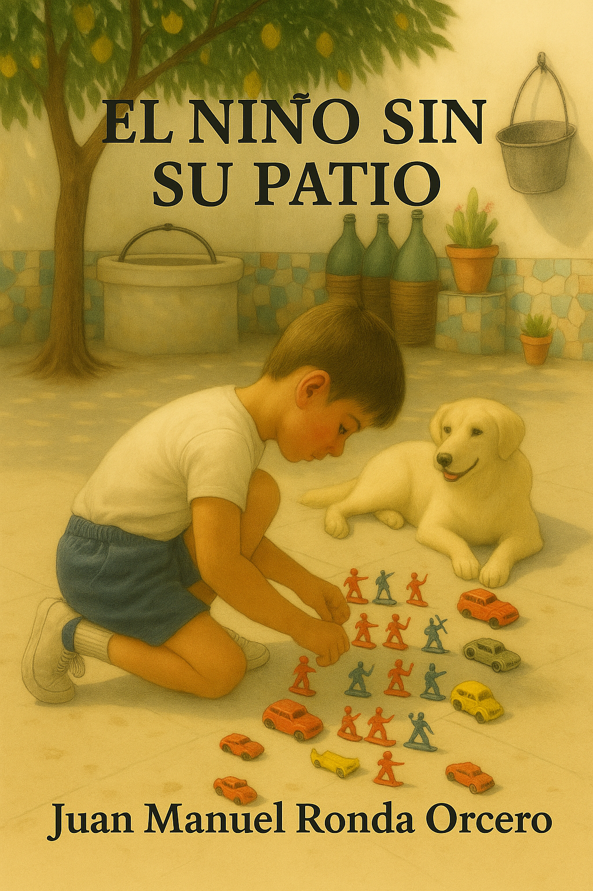
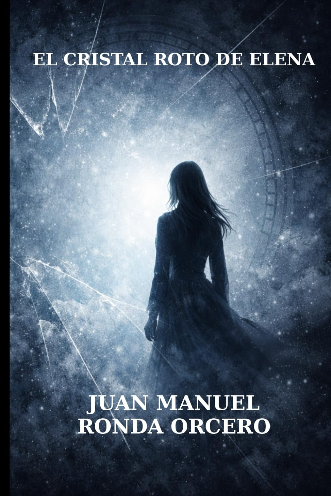

El niño sin su patio
Infancia, memoria y huella emocional de los lugares que nos construyen.
Libros, vídeos, contacto directo y una presencia de autor pensada para lectores reales.
Aquí encontrarás sus libros publicados, materiales audiovisuales, una biografía clara, acceso a Amazon, Facebook profesional y vías de contacto para seguimiento, presentaciones o venta directa.

Infancia, memoria y huella emocional de los lugares que nos construyen.

Percepción, deseo, realidad y fisuras de la identidad contemporánea.
Una entrada clara a la obra publicada, con sinopsis útiles, identidad visual cuidada y llamadas directas a compra, vídeo o exploración adicional.
Una sección dinámica para que el visitante no solo vea portadas, sino que entienda rápidamente el tono, el interés y el perfil de lectura de cada obra.
Porque convierte lo autobiográfico en literatura sin perder cercanía. La fuerza del libro no está solo en lo que cuenta, sino en cómo convierte una experiencia concreta en una resonancia universal: la infancia, el barrio, los objetos, los afectos y las ausencias.
Funciona especialmente bien para quien valora la memoria como materia emocional y narrativa, y para quien reconoce que los espacios vividos forman parte profunda del carácter.
Memoria, identidad, lugares fundacionales, emoción contenida, evocación de un mundo íntimo y recuperación literaria de una experiencia personal con vocación de permanencia.
Porque no se conforma con narrar: explora. La novela pone en primer plano la experiencia interior, la inestabilidad de la percepción y la tensión entre deseo, realidad y construcción mental. Propone una lectura más interpretativa, con capas y resonancias.
Es una obra adecuada para lectores que prefieren una ficción con espesor psicológico y con una dimensión reflexiva que se prolonga más allá de la última página.
Realidad y percepción, fractura emocional, identidad, tensión psicológica, mirada introspectiva y una narrativa abierta a múltiples lecturas.
Booktrailers y piezas de apoyo para que el visitante acceda a una impresión más inmediata y emocional de cada obra.
Presentación audiovisual del libro.

Presentación audiovisual del libro.

Una presentación clara y profesional, pensada para que el visitante entienda de inmediato quién escribe, desde dónde lo hace y qué continuidad tiene su obra.

La página está concebida para invitar a explorar, no solo para mostrar datos. El visitante encuentra una ruta clara desde la curiosidad inicial hasta la compra, el seguimiento o el contacto.
El visitante puede ver de inmediato qué libros existen, qué tono tienen y qué tipo de experiencia de lectura proponen.
Las secciones dinámicas, las sinopsis y los vídeos aportan recorrido, contexto y una lectura más rica del conjunto.
Amazon, Facebook profesional y email permiten seguir la actividad del autor o establecer contacto directo.
Una capa más de contenido para que la web resulte menos estática y ofrezca respuestas rápidas sin necesidad de salir de ella.
En los enlaces directos a Amazon incluidos en esta web. También puedes consultar por email para información sobre venta directa.
Sí. La vía más clara en este momento es el Facebook profesional, además de esta propia web y la página de autor en Amazon.
Sí. La estructura está pensada para añadir más obras, reseñas, actos, vídeos, entrevistas y nuevos proyectos sin rehacer la base completa.
Una escritura que combina memoria, reflexión y ficción, con especial atención a la identidad, las emociones y la experiencia humana.
Sí. La sección audiovisual incluye dos piezas promocionales para acercarse a cada obra de forma rápida y visual.
Sí. La web incluye email de contacto para consultas, propuestas o información sobre venta directa.
Todos los canales clave reunidos en una sola zona, con una presentación pública limpia y funcional.
Esta versión ya está concebida como base pública estable. A partir de aquí solo habría que añadir nuevos bloques cuando aparezcan más libros, reseñas, entrevistas, presentaciones o materiales de prensa.